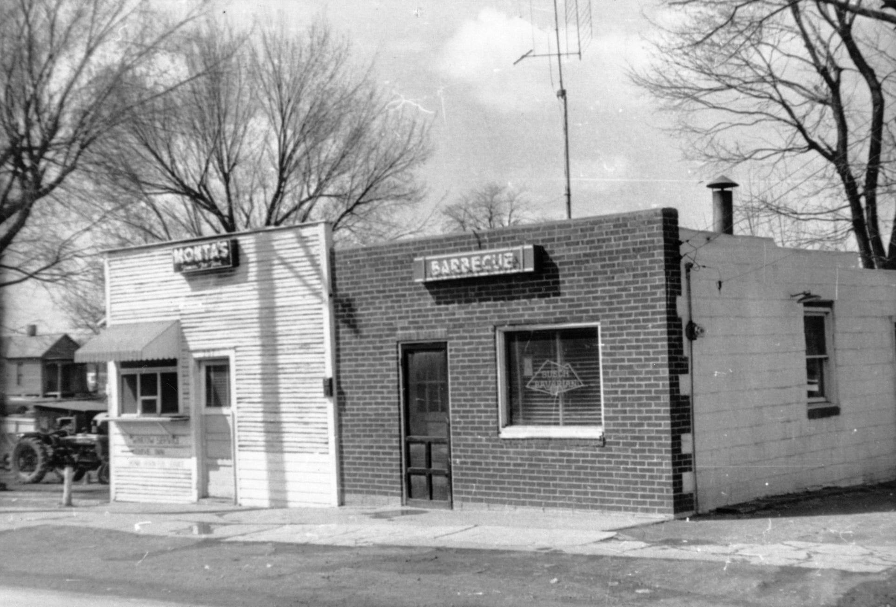
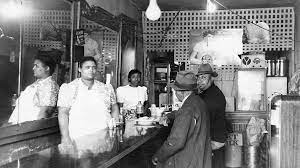

It has been 40 years since the Sharp End District has been marked on a map of Columbia but that doesn’t mean the history and stories of the once residents of Sharp End are erased from the city. Sharp End was a thriving community with many influential and successful businesses to call it home. Many of the stories that are still told to this day are of ordinary citizens making the Sharp End district feel comforting and lively for its residents by providing everyday necessities in a time where segregation and racial terror were at its height. Residents and businessmen such as John Lange Sr. left a lasting mark on the district. Lange owned a butcher shop on Fourth and Cherry and was the only meat market in the area and therefore was successful for many years and Lange eventually relocated his business where he was able to expand to occupy his surge in success. Following Lange’s business success in the area, segregation began to increase and therefore Sharp End’s popularity among the black community began to grow.
Caption: Monta K. Ralph was the owner of Monta's Chicken and Ribs Shack at 205 North fifth Street. Monta was known in the area as 'the Barbecue King'. Credit: The State Historical Society of Missouri
Sharp End was well known for occupying fifth and sixth street on Walnut. What started as just a few black owned businesses, later grew to house up to 26 businesses on average every year. During the time of the Sharp End District, separation of races in Columbia was at its height and therefore black residents made Sharp End what it was because they had nowhere else to go. This district became a safe haven city within the city because it was a place where they didn’t have to face the discrimination that was waiting for them on the southside of town.
Other influential businessmen in the area was Ed Tibbs who owned and operated businesses such as, Kingfish Smoke Shop and Shoe Shining, Central Marketing, Green Tree Tavern, and more. He also worked at the McKinney Hall helping to book many of the acts there, like Ella Fitzgerald, Dizzy Gillespie, and Billie Holiday.
Caption: Edna and Robert Harris pictured inside their Cafe, Elite Cafe, that was located in the 500 Block of Walnut Street. Credit: The State Historical Society of Missouri.
The District was known to be a place where black people could really be themselves. They could follow their own rules and dress how they like without the racial terror that awaited them outside the district, south side of town. It was known to be only a spot for adults; not for kids or families to hang out at. The area may not have been the only place for black people in Columbia, but it was influential none the less to the black community as it gave them a sense of humanity that was not being provided anywhere else. When Urban Renewal came and took away many of the businesses and homes in the district, black people were now having to go to white establishments for their needs and were no longer treated well. Segregation may have been over, but the treatment of black residents remained cruel for a long time and residents no longer had a safe haven they could escape to in order to feel like their humanity was being questioned. Sharp End’s demise has caused an open wound in the black community for over 40 years now and some residents can still remember the district and it’s thriving community today.